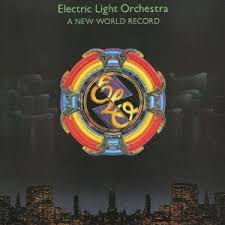
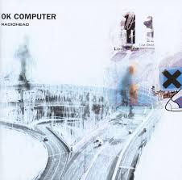

My Bonnie lies over the ocean.
My Bonnie lies over the sea.
My Bonnie lies over the ocean.
Oh, bring back my Bonnie to me.
I AM THERESA :)
Welcome to my github pages hosted website. It is clearly a wip. For FUN. SHUT UP!
Bugs are back. It is all so farmiliar. I am cleaning my weapons
It will talk about me and what I like. Starting with the basics which is planes,
snow, science, making things, laughing, outside, and other things.
I have a apartment that is protected by 24/7 drone strike capabilities and my wifi is fast.
Dont bother doxing this. Check out the other tabs they are better idk what to put here.
HAVE A GREAT DAy :-)
SONG OF THE DAY!!!!
8/04/24: Cornflake Girl - Tori Amos
8/02/24: Mercy Courts - Flowers For Emily
7/31/24: I just k*lled a cop now im h***y - jpegmafia (i skip to 1:30)
7/29/24: Psychic Sobriety - Foie Gras
7/27/24: Sweet Dreams - Angel Olsen
7/25/24: Are You Sure? - Glitterer
7/23/24: Falling Away From Me - KORN
8/04/24: Freight Yard - The Garden
8/03/24: Funny Thing - The Vines
8/01/24: Nomatterday - Pixies
7/30/24: Flutter - julie
7/28/24: Space Cowboy - ZillaKami
7/26/24: Zero Day - Nothing
7/24/24: Violet - Hole
Sat Jul 27 2024
I like when bugs choose me. It is such a simple thing that for some reason to me, feels like everything. The two dragonflies that wouldn't go near my brother but took a nap on my knee. The sleepy bee at the Pirate's game that fell asleep on my leg (next to the bee tattoo, nonetheless). They have such short lifespans and decide to use me as a rest spot and I do think it is special. They have never hurt me during their time here either. Why be scared or shoo them away. I would never. What if the earth shooed me away? Blashphemy.
Tues Jul 30 2024
I feel super evil today. I have not been evil in a while so I guess that is fun. Evil mode on. It was onset by a slight of rain mixed with getting away with things I shouldnt. Lalalala! Been listening to a lot of goth tunes while I code with a fairy floss theme. COding in R though so its psuedo coding essentially. I can't work on this in public becausew html is so embarassing so I gotta do it quick while no one is around. Been reading books (right now we have 6 half done- this is bad) but they all claim to be disturbing. I think normies glorify and make drug users into something they arent and dehumanize them to a point where it's normal for them to become a sort of twisted narrative in fiction meant to shock in a edgy way which is sooo weird. Like that one movie where they get into heroin and stuff but indie kids love it for the editing and saw type lighting aesthetics just makes me bite my toungue idk. Whats that movie called. Requim for da dream. Jared Leto hot as hell in it so fair enough.its like u never saw an OD and it shows mama
Sun Jul 28 2024
I got the github app so im adding this entry on my phone which is pretty cool. Listening to Karma Police and driving with my knee. Deren said she thought my car was driving itself. i hate walmart and i love the weather.
Wed Jul 31 2024
I am sad today. I got in trouble. with the man. yeah that one. Got a free taco. Had fun at the gym with my bro which was nice but someone mansplained to her and i got all mad. Like didnt ASK. My manager slapped my back while I had my headphones on and it scared me and i yelled. I got a present. I really fw taco bell. I am considering picking up a bad habit. I need to scream at it. I need to jump into water from a tall height. I won gun game with a lead of 9 which was goated. Adromeda just came on I feel a little better. Nothing in it for me except a heart thats lazy.. running from my own life now... looking up to the sky for something I may never find. Coffee date w DDog in the morning booyah. Let me die (mr krabs voice). I am blogging in a way that sucks
So this is where I will talk about my favorite albums. This is a safe space.
BOSSANOVA - PIXIES
I love the pixies. Anything they make is rightfully stuck in my head perpetually. I think I put off their entire discigraphy for a while due to Where is My Mind? being cringe. But yeah objectively that song doesn't do them justice.
Tracklist: 1. Cecilia Ann 2:06, 2. Rock Music 1:52, 3. Velouria 3:40, 4. Allison 1:18, 5. Is She Weird 3:01, 6. Ana 2:09, 7. All Over the World 5:27, 8. Dig for Fire 3:03, 9. Down to the Well 2:29, 10. The Happening 4:19, 11. Blown Away 2:20, 12. Hang Wire 2:01, 13. Stormy Weather 3:27, 14. Havalina 2:34
The Stroke's newest album, The New Abnormal is a perfect extension of all of their prior albums. Perhaps even better which is not something we see out of bands this late in their carreers. Cover artwork by Basquait is also super cool (fact checkt this). Also big NY 2000s scene, the Strokes and their rise to being goated is also documented in Meet Me in the Bathroom. Not a single non-banger detected even after critical surveilance. Can someone explain why they went back to RCA? The book was written prior to this.
Tracklist: 1. The Adults Are Talking, 2. Selfless, 3. Brooklyn Bridge To Chorus, 4. Bad Decisions, 5. Eternal Summer, 6. At The Door, 7. Why Are Sundays So Depressing, 8. Not The Same Anymore, 9. Ode To The Mets
DEPRESSION CHERRY - BEACH HOUSE
Hurrian Hymn No. 6
But for the title of oldest extant song, most historians point to “Hurrian Hymn No. 6,” an ode to the goddess Nikkal that was composed in cuneiform by the ancient Hurrians sometime around the 14th century B.C.
The clay tablets containing the tune were excavated in the 1950s from the ruins of the city of Ugarit in Syria. Along with a near-complete set of musical notations, they also include specific instructions for how to play the song on a type of nine-stringed lyre.
“Hurrian Hymn No. 6” is considered the world’s earliest melody, but the oldest musical composition to have survived in its entirety is a first century A.D. Greek tune known as the “Seikilos Epitaph.” The song was found engraved on an ancient marble column used to mark a woman’s gravesite in Turkey.
A NEW WORLD RECORD - ELO

Hurrian Hymn No. 6
But for the title of oldest extant song, most historians point to “Hurrian Hymn No. 6,” an ode to the goddess Nikkal that was composed in cuneiform by the ancient Hurrians sometime around the 14th century B.C.
The clay tablets containing the tune were excavated in the 1950s from the ruins of the city of Ugarit in Syria. Along with a near-complete set of musical notations, they also include specific instructions for how to play the song on a type of nine-stringed lyre.
“Hurrian Hymn No. 6” is considered the world’s earliest melody, but the oldest musical composition to have survived in its entirety is a first century A.D. Greek tune known as the “Seikilos Epitaph.” The song was found engraved on an ancient marble column used to mark a woman’s gravesite in Turkey.
OK COMPUTER - RADIOHEAD

Hurrian Hymn No. 6
But for the title of oldest extant song, most historians point to “Hurrian Hymn No. 6,” an ode to the goddess Nikkal that was composed in cuneiform by the ancient Hurrians sometime around the 14th century B.C.
The clay tablets containing the tune were excavated in the 1950s from the ruins of the city of Ugarit in Syria. Along with a near-complete set of musical notations, they also include specific instructions for how to play the song on a type of nine-stringed lyre.
“Hurrian Hymn No. 6” is considered the world’s earliest melody, but the oldest musical composition to have survived in its entirety is a first century A.D. Greek tune known as the “Seikilos Epitaph.” The song was found engraved on an ancient marble column used to mark a woman’s gravesite in Turkey.
HYPERVIEW - TITLE FIGHT
Hurrian Hymn No. 6 But for the title of oldest extant song, most historians point to “Hurrian Hymn No. 6,” an ode to the goddess Nikkal that was composed in cuneiform by the ancient Hurrians sometime around the 14th century B.C. The clay tablets containing the tune were excavated in the 1950s from the ruins of the city of Ugarit in Syria. Along with a near-complete set of musical notations, they also include specific instructions for how to play the song on a type of nine-stringed lyre. “Hurrian Hymn No. 6” is considered the world’s earliest melody, but the oldest musical composition to have survived in its entirety is a first century A.D. Greek tune known as the “Seikilos Epitaph.” The song was found engraved on an ancient marble column used to mark a woman’s gravesite in Turkey.
FLORAL GREEN - TITLE FIGHT
Hurrian Hymn No. 6 But for the title of oldest extant song, most historians point to “Hurrian Hymn No. 6,” an ode to the goddess Nikkal that was composed in cuneiform by the ancient Hurrians sometime around the 14th century B.C. The clay tablets containing the tune were excavated in the 1950s from the ruins of the city of Ugarit in Syria. Along with a near-complete set of musical notations, they also include specific instructions for how to play the song on a type of nine-stringed lyre. “Hurrian Hymn No. 6” is considered the world’s earliest melody, but the oldest musical composition to have survived in its entirety is a first century A.D. Greek tune known as the “Seikilos Epitaph.” The song was found engraved on an ancient marble column used to mark a woman’s gravesite in Turkey.
YOU AND YOUR FREINDS - PEACH PIT
Hurrian Hymn No. 6 But for the title of oldest extant song, most historians point to “Hurrian Hymn No. 6,” an ode to the goddess Nikkal that was composed in cuneiform by the ancient Hurrians sometime around the 14th century B.C. The clay tablets containing the tune were excavated in the 1950s from the ruins of the city of Ugarit in Syria. Along with a near-complete set of musical notations, they also include specific instructions for how to play the song on a type of nine-stringed lyre. “Hurrian Hymn No. 6” is considered the world’s earliest melody, but the oldest musical composition to have survived in its entirety is a first century A.D. Greek tune known as the “Seikilos Epitaph.” The song was found engraved on an ancient marble column used to mark a woman’s gravesite in Turkey.
KID A - RADIOHEAD
Hurrian Hymn No. 6 But for the title of oldest extant song, most historians point to “Hurrian Hymn No. 6,” an ode to the goddess Nikkal that was composed in cuneiform by the ancient Hurrians sometime around the 14th century B.C. The clay tablets containing the tune were excavated in the 1950s from the ruins of the city of Ugarit in Syria. Along with a near-complete set of musical notations, they also include specific instructions for how to play the song on a type of nine-stringed lyre. “Hurrian Hymn No. 6” is considered the world’s earliest melody, but the oldest musical composition to have survived in its entirety is a first century A.D. Greek tune known as the “Seikilos Epitaph.” The song was found engraved on an ancient marble column used to mark a woman’s gravesite in Turkey.
PINKERTON - WEEZER
Hurrian Hymn No. 6 But for the title of oldest extant song, most historians point to “Hurrian Hymn No. 6,” an ode to the goddess Nikkal that was composed in cuneiform by the ancient Hurrians sometime around the 14th century B.C. The clay tablets containing the tune were excavated in the 1950s from the ruins of the city of Ugarit in Syria. Along with a near-complete set of musical notations, they also include specific instructions for how to play the song on a type of nine-stringed lyre. “Hurrian Hymn No. 6” is considered the world’s earliest melody, but the oldest musical composition to have survived in its entirety is a first century A.D. Greek tune known as the “Seikilos Epitaph.” The song was found engraved on an ancient marble column used to mark a woman’s gravesite in Turkey.
MAN ON THE MOON II: THE LEGEND OF MR. RAGER - KID CUDI


 Hurrian Hymn No. 6 But for the title of oldest extant song, most historians point to “Hurrian Hymn No. 6,” an ode to the goddess Nikkal that was composed in cuneiform by the ancient Hurrians sometime around the 14th century B.C. The clay tablets containing the tune were excavated in the 1950s from the ruins of the city of Ugarit in Syria. Along with a near-complete set of musical notations, they also include specific instructions for how to play the song on a type of nine-stringed lyre. “Hurrian Hymn No. 6” is considered the world’s earliest melody, but the oldest musical composition to have survived in its entirety is a first century A.D. Greek tune known as the “Seikilos Epitaph.” The song was found engraved on an ancient marble column used to mark a woman’s gravesite in Turkey.
Hurrian Hymn No. 6 But for the title of oldest extant song, most historians point to “Hurrian Hymn No. 6,” an ode to the goddess Nikkal that was composed in cuneiform by the ancient Hurrians sometime around the 14th century B.C. The clay tablets containing the tune were excavated in the 1950s from the ruins of the city of Ugarit in Syria. Along with a near-complete set of musical notations, they also include specific instructions for how to play the song on a type of nine-stringed lyre. “Hurrian Hymn No. 6” is considered the world’s earliest melody, but the oldest musical composition to have survived in its entirety is a first century A.D. Greek tune known as the “Seikilos Epitaph.” The song was found engraved on an ancient marble column used to mark a woman’s gravesite in Turkey.
 Hurrian Hymn No. 6 But for the title of oldest extant song, most historians point to “Hurrian Hymn No. 6,” an ode to the goddess Nikkal that was composed in cuneiform by the ancient Hurrians sometime around the 14th century B.C. The clay tablets containing the tune were excavated in the 1950s from the ruins of the city of Ugarit in Syria. Along with a near-complete set of musical notations, they also include specific instructions for how to play the song on a type of nine-stringed lyre. “Hurrian Hymn No. 6” is considered the world’s earliest melody, but the oldest musical composition to have survived in its entirety is a first century A.D. Greek tune known as the “Seikilos Epitaph.” The song was found engraved on an ancient marble column used to mark a woman’s gravesite in Turkey.
Hurrian Hymn No. 6 But for the title of oldest extant song, most historians point to “Hurrian Hymn No. 6,” an ode to the goddess Nikkal that was composed in cuneiform by the ancient Hurrians sometime around the 14th century B.C. The clay tablets containing the tune were excavated in the 1950s from the ruins of the city of Ugarit in Syria. Along with a near-complete set of musical notations, they also include specific instructions for how to play the song on a type of nine-stringed lyre. “Hurrian Hymn No. 6” is considered the world’s earliest melody, but the oldest musical composition to have survived in its entirety is a first century A.D. Greek tune known as the “Seikilos Epitaph.” The song was found engraved on an ancient marble column used to mark a woman’s gravesite in Turkey.
 Hurrian Hymn No. 6 But for the title of oldest extant song, most historians point to “Hurrian Hymn No. 6,” an ode to the goddess Nikkal that was composed in cuneiform by the ancient Hurrians sometime around the 14th century B.C. The clay tablets containing the tune were excavated in the 1950s from the ruins of the city of Ugarit in Syria. Along with a near-complete set of musical notations, they also include specific instructions for how to play the song on a type of nine-stringed lyre. “Hurrian Hymn No. 6” is considered the world’s earliest melody, but the oldest musical composition to have survived in its entirety is a first century A.D. Greek tune known as the “Seikilos Epitaph.” The song was found engraved on an ancient marble column used to mark a woman’s gravesite in Turkey.
Hurrian Hymn No. 6 But for the title of oldest extant song, most historians point to “Hurrian Hymn No. 6,” an ode to the goddess Nikkal that was composed in cuneiform by the ancient Hurrians sometime around the 14th century B.C. The clay tablets containing the tune were excavated in the 1950s from the ruins of the city of Ugarit in Syria. Along with a near-complete set of musical notations, they also include specific instructions for how to play the song on a type of nine-stringed lyre. “Hurrian Hymn No. 6” is considered the world’s earliest melody, but the oldest musical composition to have survived in its entirety is a first century A.D. Greek tune known as the “Seikilos Epitaph.” The song was found engraved on an ancient marble column used to mark a woman’s gravesite in Turkey.
 Hurrian Hymn No. 6 But for the title of oldest extant song, most historians point to “Hurrian Hymn No. 6,” an ode to the goddess Nikkal that was composed in cuneiform by the ancient Hurrians sometime around the 14th century B.C. The clay tablets containing the tune were excavated in the 1950s from the ruins of the city of Ugarit in Syria. Along with a near-complete set of musical notations, they also include specific instructions for how to play the song on a type of nine-stringed lyre. “Hurrian Hymn No. 6” is considered the world’s earliest melody, but the oldest musical composition to have survived in its entirety is a first century A.D. Greek tune known as the “Seikilos Epitaph.” The song was found engraved on an ancient marble column used to mark a woman’s gravesite in Turkey.
Hurrian Hymn No. 6 But for the title of oldest extant song, most historians point to “Hurrian Hymn No. 6,” an ode to the goddess Nikkal that was composed in cuneiform by the ancient Hurrians sometime around the 14th century B.C. The clay tablets containing the tune were excavated in the 1950s from the ruins of the city of Ugarit in Syria. Along with a near-complete set of musical notations, they also include specific instructions for how to play the song on a type of nine-stringed lyre. “Hurrian Hymn No. 6” is considered the world’s earliest melody, but the oldest musical composition to have survived in its entirety is a first century A.D. Greek tune known as the “Seikilos Epitaph.” The song was found engraved on an ancient marble column used to mark a woman’s gravesite in Turkey.
 Hurrian Hymn No. 6 But for the title of oldest extant song, most historians point to “Hurrian Hymn No. 6,” an ode to the goddess Nikkal that was composed in cuneiform by the ancient Hurrians sometime around the 14th century B.C. The clay tablets containing the tune were excavated in the 1950s from the ruins of the city of Ugarit in Syria. Along with a near-complete set of musical notations, they also include specific instructions for how to play the song on a type of nine-stringed lyre. “Hurrian Hymn No. 6” is considered the world’s earliest melody, but the oldest musical composition to have survived in its entirety is a first century A.D. Greek tune known as the “Seikilos Epitaph.” The song was found engraved on an ancient marble column used to mark a woman’s gravesite in Turkey.
Hurrian Hymn No. 6 But for the title of oldest extant song, most historians point to “Hurrian Hymn No. 6,” an ode to the goddess Nikkal that was composed in cuneiform by the ancient Hurrians sometime around the 14th century B.C. The clay tablets containing the tune were excavated in the 1950s from the ruins of the city of Ugarit in Syria. Along with a near-complete set of musical notations, they also include specific instructions for how to play the song on a type of nine-stringed lyre. “Hurrian Hymn No. 6” is considered the world’s earliest melody, but the oldest musical composition to have survived in its entirety is a first century A.D. Greek tune known as the “Seikilos Epitaph.” The song was found engraved on an ancient marble column used to mark a woman’s gravesite in Turkey.